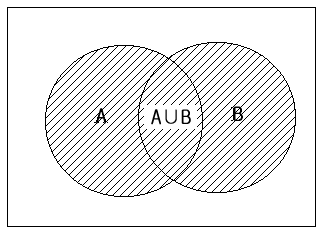
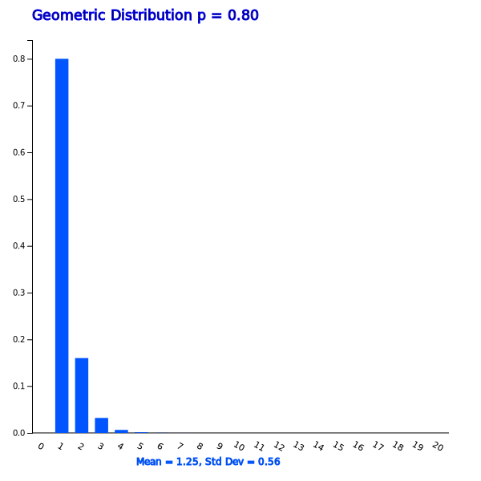
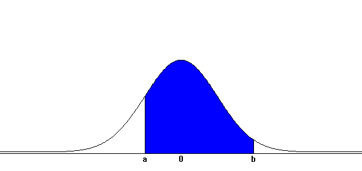
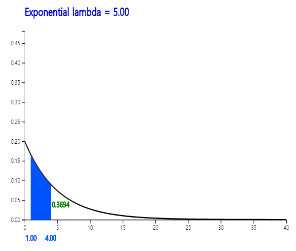

Similar events occur repeatedly in our everyday life. We describe a chance of the event using a concept of the probability.
In this chapter, we describe a definition of the probability in Section 5.1. Several rules of calculating the probability is described in Section 5.2.
There are many possible events in our everyday life which we can calculate the probability of the event. We focus on events which occur frequently and can be modeled as a random variable. Probability of all possible events of the random variable is called a probability distribution function.
In section 5.3, probability distributions of the discrete random variable such as Binomial Distribution,
Poisson Distribution, Geometric Distribution, Hypergeometric Distribution are described.
In section 5.4, probability distributions of continuous random variables such as Normal Distribution, and Exponential Distribution are described.
Similar events occur repeatedly or are carried out in our everyday life. Let us consider following examples.
- A machine produces products repeatedly at a production plant. The product can be either a normal product or a defective product, but it is not known in advance.
- I have ordered pizza at home every Sunday. It usually takes about 30 minutes for a pizza to be delivered to the house, but the exact time is not known.
These examples have common characteristics as follows.
- There is repetition of similar events, such as the production of products or pizza deliveries.
- We know all possible outcomes of events that the product will be defective or normal, and the pizza delivery time will be 10 minute, 20 minutes, 30 minutes and so on.
- But we do not know which outcome exactly will happen.
Events with these three characteristics are subject to study and to apply statistics.
An experiment in which a particular outcome occurs among known possible outcomes is called a statistical experiment. In a statistical experiment, the resulting outcome is uncertain and is determined by chance. For example, if you throw a coin, possible outcomes are either the head or tail, but the resulting outcome will come out by chance, so the experiment of tossing a coin is a statistical experiment. If a production plant produces products at one machine and their possible outcomes are either defective or normal, then the experiment of producing a product is a statistical experiment. Also, a pizza delivery time to your home which takes between 20 and 60 minutes is a statistical experiment.
Statistical experiment
An experiment in which a particular outcome occurs among known possible outcomes. The outcome is uncertain
and is determined by chance.
In a statistical experiment, the set of all possible outcomes is referred to as a sample space,
and a subset of this sample space is referred to as an event. The sample space is usually denoted by S, and events of the sample space are denoted by English capital letters as A, B, and C ...
In the example above that a machine produces a product, the sample space is S = {normal, defective} and a subset of the sample space such as A = {defective} is an event.
As such, when the number of elements in a sample space is either finite or countably infinite, it is called a discrete sample space.
In a statistical experiment of the pizza delivery time to home, the sample space is all possible time between 20 minutes and 60 minutes, i.e. S = { (20,60) }.
Delivery time between 20 minutes and 30 minutes ({20,30}) is called an event. As such, when the number of elements in a sample space is uncountably infinite, it is called a continuous sample space.
Sample space and event
A set of all possible outcomes in a statistical experiment is referred to as a sample space.
If the number of elements in a sample space is finite or countably infinite, it is called a discrete sample space.
If the number of elements in a sample space is uncountably infinite, it is called a continuous sample space.
A subset of the sample space is referred to as an event.
A concept of probability is used to indicate the possibility of an event occurring in a statistical experiment.
The probability is a representation of the likelihood of an event occurring using a number between 0 and 1.
If an event is likely to occur, the probability is expressed as a number close to 1. If it is unlikely to occur, the probability is expressed as a number close to zero. Specifically, there are several ways to define the probability of an event using a number between zero and one. We introduce two definitions of the probability, one is a classical definition and the other is a relative definition of the probability.
Classical definition of probability
Assume that all elements in sample space are likely to occur equally. The probability of an event A will occur, denoted as P(A), in case of the discrete sample space is defined as follows:
$$ \small
P(A) = \frac {\text {Number of elements belonging to an event A}} {\text {Total number of elements in sample space}}
$$
The probability of an event A will occur in case of the continuous sample space is defined as follows.
$$ \small
P(A) = \frac {\text {Measurement of elements belonging to an event A}} {\text {Measurement of the total elements of a sample space} }
$$
where measurement here can be the length, area and volume etc.
Example 5.1.1
An office worker went on a business trip to a city and there are two restaurants (Restaurant A and B) near his lodging. He was hesitating about which restaurant to go, and threw a dice to count the number of points that appear on the top. If he had odd numbers, he would go to the Restaurant A, and if he had even numbers, he would go to the Restaurant B. What is the probability that the Restaurant A would be picked?
Answer
The sample space in this statistical experiment, which counts the number of points on the top by throwing a dice, is {1, 2, 3, 4, 5, 6}, and the number of odd events is {1, 3, 5}, so there are three elements. Therefore, the probability that restaurant A will be selected is 3/6 = 1/2.
Example 5.1.2
I ordered a pizza from home every Sunday. The time it takes for a pizza to be delivered my home has the same possibility for any time from 10 to 30 minutes (you may have a decimal number). What is the probability that a pizza will be delivered between 20 and 25 minutes?
Answer
The sample space in this example is all values from 10 to 30 minutes collectively { (10,30) }, and where a pizza is delivered between 20 and 25 minutes is the event { (20,25) }. Therefore, the probability of this event is \( \small \frac {(25-20)} { (30-10)} = 0.25 \) by measuring the distance of the interval.
The classical definition of the probability does not usually have a major problem in calculating the probability of a real problem. However, in the classical definition of the probability, it may not be possible to assume that all elements of the sample space are likely to occur. For example, tossing a coin usually results in ‘Head' and 'Tail' but can be very rarely ’Edge’. Considering this, the assumption that the sample space {'Head’, 'Tail' and 'Edge'} does not make sense that at this time each element of the sample space is likely to occur equally. The relative frequency definition of the probability is to solve these problems.
Relative frequency definition of probability
The probability that an event A will occur, denoted by P(A), is the rate at which the event A occurs when many statistical experiments are conducted under the same condition repeatedly.
If this definition is used, it can be explained that the coin tossing stands as an 'Edge.' If a coin has been thrown 10,000 times and 'Head' is appeared 4980 times, 'Tail' 5018 times, 'Edge' twice, then P({Head}) = 4980/10000, P({Tail}) = 5018/10000, P({Edge}) = 2/10000.
More iterative runs make the definition of the probability using the relative frequency almost approximates to the probability values by the classical definition.
<Figure 5.1.1> shows a simulation of a coin toss experiment using 『eStatU』 which shows the probability of ‘Head’ occurrence converges to one-half. This convergence of the probability is called the law of large numbers.
In order to calculate the probability of an event in a discrete sample space, the number of elements
in the sample space and the number of elements included in the event should be counted.
If all possible outcomes of the sample space is not large, the probability can be simply calculated,
but it is generally not easy to count the number of all possible outcomes. Effective methods
for counting the number of complex cases include the permutation and combination.
Permutation
The number of cases to select r objects out of n objects considering the order is called the
permutation and is calculated as follows:
\[
_{n} P_{r} = n (n-1) (n-2) \cdots (n-r+1) = \frac {n!} {(n-r)!}
\]
Therefore, the number of cases to list all n objects is as follows:
$$
_{n} P_{n} = n(n-1)(n-2) \cdots 2 \cdot 1 = n!
$$
Note: 0! = 1
Combination
The number of cases to select r objects out of n objects without considering the order is called the
combination and is calculated as follows.
$$
_{n} C_{r} = \frac { _{n} P_{r} } {r!} = \frac {n!} {r!(n-r)!}
$$
Example 5.2.1
Four people A, B, C and D are intended to be placed on four side-by-side chairs. Calculate the total number of cases in which four people are placed, and the number of cases in which A is placed on the leftmost. What is the probability that A is placed on the leftmost side?
Answer
The number of elements in the sample space in this example is as follows.
$$ \small
\begin{multline}
\shoveleft\text { (number of people that can be placed on the leftmost) } × \\
\shoveleft\text { (number of people except left who can be placed in the second position) } × \\
\shoveleft\text { (number of people who can be placed in the third place except for two left people) } × \\
\shoveleft\text { (number of people, excluding the three on the left, who can be positioned to the right) } \\
\shoveleft = 4 × 3 × 2 × 1 = 4! = 24
\end{multline}
$$
The event in which A is placed on the left is the number of people placed in the second, third, and right positions except A, so 3×2×1 = 3!. Therefore, the probability that A will be placed to the left is as follows.
Example 5.2.2
A company has four security guards (A, B, C, D). Each morning, two of these guards are randomly selected, one at the front gate and the other at the rear guard. Obtain the total number of cases in which four people are placed at the front and rear gates and the number of cases in which A is placed at the front gate. What is the probability that A will be placed at the front gate?
Answer
The number of elements in the sample space in this problem is as follows.
\( \qquad \small \text { (number of people who can be placed at the front gate) } × \)
\( \qquad \small \text { (number of people who can be placed in the rear except those placed in the front) } \)
\( \qquad \small = 4 × 3 = {}_{4}P_{2} = 12 \)
The number of elements in the event where A will be placed at the front gate is \( _{3} P_{1} = 3 \), since A can be placed at the front gate and one of the other three can be placed at the rear gate.
That is, the probability that A will be placed at the front gate one day is as follows.
There are several calculation rules for calculating complex probabilities other than the permutation and the combination. Let us consider the examples below to explain the rules.
Example 5.2.3
Out of 40 sophomores in a Statistics Department this semester, 25 students are taking Economics, 30 students are taking Political Science and 20 students are taking both courses. When I meet one of the sophomores, what is the probability of this student taking either Economics or Political Science (that is one or both)?
Answer
Since there are 25 students who take Economics and 20 students taking both courses, 25 - 20 = 5 students take only Economics. Also, since there are 30 students who take Political Science, 30 - 20 = 10 students take only Political Science. Thus, as shown in <Figure 5.2.1>, the number of students taking either Economics or Political Science is 5 + 10 + 20 = 35. Therefore, the probability of students taking either Economics or Political Science is 35 / 40.
<Figure 5.2.1> Students who take either economics or political science
Consider the case of students taking both Economics (A) and Political Science (B). The event that a student takes both courses are denoted as A ∩ B and is called an intersection event of A and B (<Figure 5.2.2>).
<Figure 5.2.2> Intersection events A ∩ B
The event that a student takes either Economics or Political Science (one or both) is denoted as A ∪ B and is called an union event of A and B (<Figure 5.2.3>).

<Figure 5.2.3> Union Event A ∪ B
Probabilities of these events on this example are as follows:
That is, the probability of taking either Economics or Political Science, P(A ∪ B), can be calculated by adding the probability of taking each course and then by subtracting the probability of taking both courses.
[Addition Rule of Probability]
<Figure 5.2.4> Addition Rule of Probability
The rule discussed on [Example 5.2.3] is called the addition rule of probability.
Addition Rule of Probability
$$\ P(A ∪ B) = P(A) + P(B) - P(A ∩ B) $$
If A ∩ B = ∅, then the rule becomes as follows:
$$ P(A ∪ B) = P(A) + P(B)$$
In this case, the events A and B are called mutually exclusive events.
Example 5.2.4
In [Example 5.2.3], if there are 10 students taking Economics, 20 students taking Political Science, and if there are no students taking both courses, what is the probability of a student is taking either Economics or Political Science?
Answer
In this case, because there are no students taking both courses, the events in which they take Economics (A) and Political Science (B) are mutually exclusive. Thus, the probability to take either Economics or Political Science, P(A U B), is as follows:
P(A U B) = P(A) + P(B) = 10/40 + 20/40 = 0.75
Let us consider the example below to find out the multiplication rule of probability.
Example 5.2.5
Students of ADA University come from either Baku or a province. Among the 30 sophomores in the Department of Economics, there are 10 males and 20 females, one of males and five of females are from the province.
1) When selecting a student, what is the probability that the student is from the province?
2) When I selected a student, the student was female. What is the probability that this student is from the province?
3) When I selected a student, the student was from the province. What is the probability of this student being a male?
4) When selecting a student, what is the probability that the student is male and from Baku?
Answer
To solve this problem, it is convenient to organize the information given into a cross table as shown below.
Baku
Province
Total
Male
1
10
Female
5
20
Total
24
6
30
If we calculate and insert the blanks on the above table, it is as follows. Let us call the event of male as M, the female as F, from Baku as B, from the province as C.
Baku(B)
Province(C)
Total
Male(M)
9
1
10
Female(F)
15
5
20
Total
24
6
30
1) \(\small P(C) = \) 6/30.
2) The probability that this student is from the province among females is 5/20.
This probability is denoted as \(\small P(C∣F) \) and is called a conditional probability.
3) The probability of a male from the province is \(\small P(M∣C) = \) 1/6.
4) The probability is \(\small P(M ∩ B) \) and the cross table shows that the answer is 9/30.
Alternatively, the probability of being a male among all students can be first obtained as \(\small P(M) = \) (10/30)
and then multiplied by the conditional probability of being from Baku among males, \(\small P(B∣M) \) = 9/10. Namely
In addition, the probability \( \small P(M ∩ B) \) can be obtained first by the probability of being a student from Baku,
\(\small P(B) = \) 24/30, and then multiplied by the probability of being a male from Baku (\(\small P(M∣B) = \) 9/24).
In the above example, the probability of an intersection event is expressed by multiplying the probabilities of other events
and it is called the multiplication rule of probability.
Multiplication Rule of Probability
$$ \small
P(A ∩ B) = P(A) P(B∣A)
$$
If \(\small P(B∣A) = P(B) \), then the rule becomes as follows:
$$ \small
P(A ∩ B) = P(A) P(B)
$$
In this case, the events \(\small A\) and \(\small B\) are called independent events.
Example 5.2.6
Tiger team of professional baseball has the probability of 0.7 to beat Lion team recently. What is the probability that Tiger is winning both games in this evening’s double match? Assume that winning one game does not affect winning the next.
Answer
Let us call the event that the Tiger wins the first game is \(\small A\) and the event that the Tiger wins the second game is \(\small B\).
Since A and B are independent of each other, the probability that the Tiger is winning both games is as follows.
Example 5.2.7
The following is a table of 30 second-year students by gender and region of origin. Are the events of male and Baku origin independent of each other?
Baku(B)
Province(C)
Total
Male(M)
5
5
10
Female(F)
10
10
20
Total
15
15
30
Answer
Let us call the event of male as \(\small M \), female as \(\small F\), from Baku as \(\small B\), and from province as \(\small C \).
From the table, probabilities of \(\small P(M ∩ B) \), \(\small P(M) \) and \(\small P(B) \) are as follows:
In this case, all events of both \(\small M \) and \(\small C \) , \(\small F \) and \(\small B \) , \(\small F \) and \(\small C \) are
independent of each other. We call the two attributes, gender and region are independent of each other.
In [Example 5.2.5], gender and region are not independent of each other.
The following is an example of how to calculate the probability of a complementary event.
Example 5.2.8
There is a box of six products, two of which are defective. What is the probability that at least one defective product will be found when three have been extracted for product testing? Assume that the product is extracted once for inspection without replacement.
Answer
The probability of finding one defective in the three product tests is as follows.
Thus, the probability that at least one defect will be found is 3/5 + 1/5 = 4/5.
Another way to calculate this probability is to obtain the probability of an event in which there will be no defect (this is called a complementary event) and then, subtract it from 1. In other words, the probability that at least one defective product can be calculated as follows.
The method used in the above example is called a rule of probability calculation using a complementary event, and is often used to obtain the probability that the word 'at least' is contained. <Figure 5.2.6> is a picture of a complementary event.
<Figure 5.2.6> Complementary event
Probability of a complementary event
if \(\small A^C \) denotes a complementary event of the event \(\small A \), then \(\small P(A^C ) \) can be calculated as follows.
$$ \small
P(A^C) = 1 - P(A)
$$
In case of statistical experiments which are frequently observed around us, there are many
similar probability calculations. For example, the problem of tossing coins several times
to see how many times the head comes out is similar to counting how many defective products are made
from a product line. This problem is also similar to counting the number of voters
who support a particular candidate for the presidential election. In this section,
the probability calculations as the previous examples, in general the discrete sample spaces are discussed.
Consider a statistical experiment in which a coin is thrown repeatedly two times. If the coin is ideal, the sample space for this experiment is {'Tail-Tail', 'Tail-Head', 'Head-Tail', 'Head-Head’}. The probability of an event in which each element of the sample space is produced is 1/4 by the classical definition. In most cases, the fact that we are interested in this example will be counting the number of heads or tails. If \(\small X\) is defined as 'the number of heads' in this experiment, the possible value of \(\small X\) can be 0, 1, or 2 and we are interested in calculating probabilities that \(\small X\)=0, \(\small X\)=1 or \(\small X\)=2. As such, a function that corresponds to one real number between [0,1] for each element of the sample space is called a random variable (see Table 5.3.1).
Table 5.3.1 Random variable \(\small X\) = 'Number of Heads’ when tossing a coin twice'
Sample space
\(\small X\) = 'Number of Heads’
Tail-Tail Tail-Head Head-Tail Head-Head
0 1 1 2
When possible values of a random variable are finite or countably infinite, it is called a discrete random variable. If possible values of a random variable are uncountably infinite, it is called a continuous random variable and discussed in more detail in Section 5.4.
Random Variable
Random variable is a function from the sample space to a real number.
When possible values of a random variable are finite or countably infinite, it is called a discrete random variable.
If possible values of a random variable are uncountably infinite, it is called a continuous random variable.
The probability that the random variable \(\small X\) defined as in Table 5.3.1 will be zero, denoted as \(\small P(X=0)\), is 1/4,
because it is the probability of an event {Tail-Tail}. The probability that \(\small X\) being 1, \(\small P(X=1)\), is 2/4, because, P({Tail-Head, Head-Tail}) is 2/4. Also, the probability that \(\small X\) being 2, \(\small P(X=2)\), is 1/4 because P({Head-Head}) is 1/4. The probabilities for each value of the random variable \(\small X\) can be summarized as shown in Table 5.3.2, and it is called a probability distribution function of \(\small X\) usually denoted as f(x). <Figure 5.3.1> is a graph of f(x).
Table 5.3.2 Probability distribution function of \(\small X\) = 'Number of Heads’ when tossing a coin twice'
1) Table style of the probability distribution function
2) Function style of the probability distribution function
<Figure 5.3.1> Probability distribution function of the random variable \(\small X\) = 'Number of Heads’ when tossing a coin twice'
The cumulative probability of \(\small P(X \le x)\) as the value of random variable \(\small X\) increases is referred to as a cumulative distribution function and denoted as F(x). In the previous example, the cumulative distribution function of the random variable \(\small X\) = 'Number of Heads’ when tossing a coin twice' is shown as in Table 5.3.3.
Table 5.3.3 Cumulative distribution function of the random variable \(\small X\) = 'Number of Heads’ when tossing a coin twice'
1) Table style of the cumulative distribution function
2) Function style of the cumulative distribution function
<Figure 5.3.2> Cumulative distribution function of the random variable \(\small X\) = 'Number of Heads’ when tossing a coin twice'
Probability Distribution Function
If probability for each value of the random variable \(X\) is summarized as a function,
it is called a probability distribution function of \(X\) and usually denoted as f(x).
The cumulative probability of \(P(X \le x)\) as the value of random variable \(X\) increases
is referred to as a cumulative distribution function and denoted as F(x).
Example 5.3.1
There are 200 families living in a village. The number of visits to hospitals by each household over the past year is as follows. Obtain the probability distribution function and the cumulative distribution function of the random variable \(\small X\) = 'hospital visit count'.
Hospital visit
0
1
2
3
4
Houshold
74
80
30
10
6
Answer
1) Probability distribution function
\(\small X = x\)
\(\small P(X = x)\)
0 1 2 3 4
0.37 0.40 0.15 0.05 0.03
Total
1.00
2) Cumulative distribution function
\(\small X = x\)
\(\small P(X \le x)\)
0 1 2 3 4
0.37 0.77 0.92 0.97 1.00
If you select [Discrete Distribution] from 『eStatU』 menu, data input window appears as follows.
Enter the data here as shown in the figure and click
[Execute] button to display the probability distribution graph as in <Figure 5.3.3>.
[Discrete Distribution]
<Figure 5.3.3> Graph of a discrete distribution using 『eStatU』
If possible values of a discrete random variable \(\small X\) are \( x_1 , x_2 , ... , x_n \), a mean and variance of \(\small X\) are also used as measures of the central tendency and dispersion.
The mean of \(\small X\) called an expectation of \(\small X\), denoted \(E(X)\) or \mu, and the variance of \(\small X\), denoted as \(\small V(X)\) or \( \sigma_X^2 \) , are defined as follows:
The standard deviation of \(\small X\), denoted σ , is the square root of the variance \(\small X\).
Example 5.3.2
Find the expected value and variance of the random variable \(\small X\) = 'Number of Heads’ when tossing a coin twice' which described in Table 5.3.2.
Answer
Expectation and variance of \(\small X\) are as follows:
When knowing the expected value \(E(X)\) and variance \(\small V(X)\) of a random variable \(\small X\),
it is often necessary to obtain the expected value and variance of \(aX + b\) where \(a\) and \(b\) are constants.
The expected value and variance of the new random variable \(aX + b\) are as follows:
This formula applies equally to a continuous random variable.
Expectation and variance of \( a X + b \) where \( a,b \) are constant.
$$
\begin{align}
E(aX + b) &= a E(X) + b \\
V(aX + b) &= a^2 V(X)
\end{align}
$$
Example 5.3.3
The mean of midterm exam scores in a Statistics course was 60 points and the variance was 100. In order to adjust the scores, professor is thinking of following alternatives. Find the mean and variance of each alternative.
1) Add 20 points to each student's score.
2) Each student's score is multiplied by 1.4.
3) Multiply each student's score by 1.2 and add 10 points.
Answer
The random variable \(\small X\) is the mid-term score and its mean and variance are \(\small E(X)\) = 60 and \(\small V(X)\) = 100.
1) The mean and variance of the new random variable \(\small X\) + 20 are as follows.
In other words, adding 10 points after multiplying by 1.2 increases the mean by 1.2 times and
the variance by \(\small 1.2^2\)= 1.44 times. Note that adding scores will change the mean, but not the variance.
Let the mean of random variable \(\small X\) be \mu and the standard deviation σ. Then \(Z = \frac{X-\mu}{\sigma}\) is a new random variable with the mean of 0 and the variance of 1.
This new random variable is referred to as a standardized random variable.
Standardized random variable
If the mean of a random variable \(X\) is \mu, and the standard deviation is σ,
then \(Z = \frac{X-\mu}{\sigma}\) is a new random variable with the mean of 0 and the variance of 1.
This new random variable is referred to as a standardized random variable.
Let us discuss about binomial, Poisson, geometrical, and hyper-geometrical distributions which are used widely as discrete probability distributions.
Examples that are similar to experiments which examine how many times the head comes out by tossing coins are observed around us. Let us take a look at following examples.
- Products produced in a factory machine are inspected and classified as either defective or normal.
- In an election survey, ask voters whether they would vote for a candidate (pro) or not (con).
In these examples there are two possible outcomes such as {defective, normal} and {pro, con} in each experiment and this experiment is repeated, but we do not know what the outcome of each experiment. Each experiment which has two possible outcomes is specifically called a Bernoulli trial, and one outcome of interest in the two is often referred to as 'success' and the other outcome as 'failure'. This Bernoulli trial is usually repeated several times and the number of ‘success’ is counted as following.
- Throw a coin five times and examine the number of heads.
- Inspect 100 products produced in a factory and count the number of defective products.
- Count the number of voters in favor of a particular candidate for the presidential election among 50 eligible voters.
Counting the number of success on repeated Bernoulli trials can be simulated using the module of ‘Binomial Experiment’ in 『eStatU』. In this module, a ball is dropped from the top and if it hits a blue box, it has one-half chance to fall to the left (get zero point) or right (get one point). The dropped ball again falls to the left and right with a 1/2 chance such as <Figure 5.3.3>. The same experiment is repeated 100 times (drop 100 balls), and we examine the number of balls which got points 0, 1, and 2. It is similar to tossing a coin two times and counting the number of heads.
[Binomial Experiment]
<Figure 5.3.3> Simulation of Binomial distribution
The 'counting of success' when performing the independently repeated Bernoulli trial with the same probability of success is called a binary random variable, and its distribution is called a binomial distribution. The probability calculation of the binomial distribution will be found by the example below.
Example 5.3.4
Four more games will be played by the Tiger baseball team this season. If the Tiger team has a 60% chance of winning every game, what is the probability of the followings.
1) losing all of them?
2) winning only once?
3) winning twice?
4) winning three times?
5) winning all four times?
6) Find the probability distribution function of the random variable \(\small X\) = ‘the number of games the tiger wins’.
Answer
This problem is the enforcement of Bernoulli trial in each game of 'win' and 'fail'. This Bernoulli trial is repeated four times. The sample space is all about winning or losing game and there are elements shown as follows by marking the winning in O and the losing in X.
1) The event that the Tiger will lose all games is {'XXXX'} and the probability of this event is (0.4)×(0.4)×(0.4)×(0.4) = \(\small (0.4)^4\).
2) There are four events that the Tiger is winning once and losing three times such as {‘OXXX’, ‘XOXX’, ‘XXOX’, ‘XXXO’}.
These four cases are equal to the number of O's in a single seat when there are four seats which is \(\small{}_4C_1\).
Since the probability of each event is (0.6)×(0.4)×(0.4)×(0.4), the probability of the Tiger winning once is \(\small{}_4C_1 (0.6)(0.4)^3\).
3) There are six events that the Tiger is winning two times and losing two times such as {‘OOXX’, ‘OXOX’, ‘OXXO’, ‘XOOX’, ‘XOXO’, ‘XXOO’}.
These six cases are equal to the number of O's in two seats when there are four seats which is \(\small{}_4C_2\).
Since the probability of each event is (0.6)×(0.6)×(0.4)×(0.4), the probability of the Tiger winning twice is \(\small{}_4C_2 (0.6)^2(0.4)^2\).
4) There are four events that the Tiger is winning three times and losing one time such as {‘OOOX’, ‘OOXO’, ‘OXOO’, ‘XOOO’}.
These four cases are equal to the number of O's in three seats when there are four seats which is \(\small{}_4C_3\).
Since the probability of each event is (0.6)×(0.6)×(0.6)×(0.4), the probability of the Tiger winning three times is \(\small{}_4C_3 (0.6)^3(0.4)^1\).
5) There is one event that the Tiger is winning four times such as {‘OOOO’}.
This one case is equal to the number of O's in four seats when there are four seats which is \(\small{}_4C_4\).
Since the probability of each event is (0.6)×(0.6)×(0.6)×(0.6), the probability of the Tiger winning all four times is \(\small{}_4C_4 (0.6)^4\).
6) The probability distribution function of the random variable X = ‘the number of games the Tiger wins’ is a summary of the above probabilities.
\(\small X = x \)
\(\small P(X=x) \)
0
\(\small {}_{4}C_0 (0.4)^4 = 0.0256 \)
1
\(\small {}_{4}C_1 (0.6) (0.4)^3 = 0.1536 \)
2
\(\small {}_{4}C_2 (0.6)^2 (0.4)^2 = 0.3456 \)
3
\(\small {}_{4}C_3 (0.6)^3 (0.4) = 0.3456 \)
4
\(\small {}_{4}C_4 (0.6)^4 = 0.1296 \)
Example 5.3.5
By using 『eStatU』, find the probability and the probability distribution function of [Example 5.3.4].
Answer
Select [Binomial Distribution] from the menu of 『eStatU』 and enter \(\small n = 4, p = 0.6\) and press the [Execute] button to display a binomial function graph as shown in <Figure 5.3.4>. Table 5.3.4 shows the table when you click the [Binomial Prob Table] button. This table makes it easy to obtain Binomial distribution probabilities from [Example 5.3.4].
[Binomial Distribution]
<Figure 5.3.4> 『eStatU』 Binomial distribution graph when \(\small n = 4, p = 0.6\)
There are sliding bars of \(n\) and \(p\) and a probability calculation box under
the graph, so put the desired value and press the [Enter] key to calculate the value.
To the right of the graph, a table of binomial distributions is shown. In addition to
\(P(X = x)\), this table shows the cumulative probabilities \(P(X \le x)\) and
\(P(X \ge x)\) to facilitate various probability calculations. If you select a new
\(n\) and \(p\) and click [Execute] button, new binomial distribution table for this
value is added below.
Table 5.3.4 『eStatU』 Binomial distribution table when \(\small n = 4, p = 0.6\)
\(n = 4\)
\(p = 0.600\)
\(x\)
\(\small P(X = x)\)
\(\small P(X \le x)\)
\(\small P(X \ge x)\)
0
0.0256
0.0256
1.0000
1
0.1536
0.1792
0.9744
2
0.3456
0.5248
0.8208
3
0.3456
0.8704
0.4752
4
0.1296
1.0000
0.1296
In general, the probability of ‘success’ when a Bernoulli trial is repeated n times, i.e., the probability of the binomial distribution, is as the following definition.
Binomial Distribution
If the probability of success is \(p\) in a Bernoulli trial and the trial is repeated \(n\) times independently,
the probability distribution function that the random variable \(X\) = the number of success’ is \(x\)
is as follows: It is called a binomial distribution and denoted as \(B(n,p)\).
$$
f(x) = {}_n C_x p^x (1-p)^{n-x} , \qquad x = 0,1,2, ... , n
$$
The expectation and variance of the binomial distribution are as follows.
$$
E(X) = np, V(X) = np(1-p)
$$
In the binomial distribution function, \(n\) (number of trials) and \(p\) (success probability) are called parameters.
<Figure 5.3.5> shows a binomial distribution of different \(n\) and \(p\).
<Figure 5.3.5> Binomial distribution for various n and p
Example 5.3.6
Past experience shows that a salesperson from an insurance company has a 20% chance of insuring a customer when he meets. The salesperson is scheduled to meet 10 customers this morning. Calculate the following probabilities directly and check using 『eStatU』.
1) What is the probability that three customers will get insurance?
2) What is the probability that two or more customers will get insurance?
3) How many people on average would sign up? And what is its standard deviation?
Answer
This is a Binomial distribution with \(n = 10, p = 0.2\).
1) The probability that three customers will get insurance is as follows:
Select ‘Binomial Distribution’ from the menu of 『eStatU』, enter \(n=10, p=0.2\), and click on the [Execute] button to display the graph shown in <Figure 5.3.6>. Checking 'Show Probability' option shows the probability on each bar where you can see the values in the above calculations.
<Figure 5.3.6> 『eStatU』 Binomial distribution when \(n = 10, p = 0.2\)
Pressing the [Binary Prob Table] button will show the Binomial distribution table shown in Table 5.3.6.
From here you can see that \(\small P(X \ge 2)\) = 0.6242
Table 5.3.5 『eStatU』 Binomial Distribution Table when \(n = 10, p = 0.2\)
\(n = 10\)
\(p = 0.200\)
\(x\)
\(\small P(X = x)\)
\(\small P(X \le x)\)
\(\small P(X \ge x)\)
0
0.1074
0.1074
1.0000
1
0.2684
0.3758
0.8926
2
0.3020
0.6778
0.6242
3
0.2013
0.8791
0.3222
4
0.0881
0.9672
0.1209
5
0.0264
0.9936
0.0328
6
0.0055
0.9991
0.0064
7
0.0008
0.9999
0.0009
8
0.0001
1.0000
0.0001
9
0.0000
1.0000
0.0000
10
0.0000
1.0000
0.0000
Practice 5.3.1
It is said that 60% of car drivers usually use a seat belt. When you select 15 drivers randomly, find the following probabilities for the number of drivers who normally use the seat belt. Check the calculation using 『eStatU』.
1) Probability of 10 or more drivers.
2) Probability of 8 or less drivers.
3) Probability of at least 11 drivers.
4) Probability of at least 7 drivers.
If the value of \(n\) increases, it is not easy to calculate the probability of Binomial probability distribution even with a calculator.
In 『eStatU』, the probability of a case \(n \le 100\) is readily available.
Example 5.3.7
The defect rate of electronic parts produced in a factory is 5 percent. When you have a box containing 50 of these parts, use 『eStatU』 to obtain the following probabilities.
1) What is the probability of having no defective product?
2) What is the probability of having 1 to 3 defective products?
3) What is the probability of having more than three defective products?
Answer
When you select \(n=50, p=0.05\) from the ‘Binomial Distribution’ of 『eStatU』 and click on the [Execute] button, the graph such as <Figure 5.3.7> appears. If you click the [Binomial Prob Table] button, then Table 5.3.6 appears.
1) You can check \(\small P(X=0)\) = 0.0769 easily from the table.
<Figure 5.3.7> 『eStatU』 Binomial Distribution when \(n = 50, p = 0.05\)
Table 5.3.6 『eStatU』 Binomial Distribution Table when \(n = 50, p = 0.05\) (in part)
\(n = 50\)
\(p = 0.050\)
\(x\)
\(\small P(X = x)\)
\(\small P(X \le x)\)
\(\small P(X \ge x)\)
0
0.0769
0.0769
1.0000
1
0.2025
0.2794
0.9231
2
0.2611
0.5405
0.7206
3
0.2199
0.7604
0.4595
4
0.1360
0.8964
0.2396
\(\cdots\)
\(\cdots\)
\(\cdots\)
\(\cdots\)
2) The probability of having 1 to 3 defective products is \(P( 1 \le X \le 3)\) and it can be calculated as follows:
\( \qquad \small
P( 1 \le X \le 3) = P( X \le 3) - P( X \le 0) = 0.7604 – 0.0769 = 0.6835
\)
You may calculate this probability as \(\small P(X=1) + P(X=2) + P(X=3)\).
3) The probability of having more than three defective products can be calculated by using the Table 5.3.6 as P(X \ge 3) = 0.4595. You may calculate this probability by using the complementary event as follows:
Practice 5.3.2
A salesperson found that there was a 30% chance of selling a product when a customer visited.
If one day ten customers visit this salesman, calculate following probabilities using 『eStatU』.
1) Exactly how likely is it to sell three products?
2) What is the probability of selling three or more products?
3) What is the probability of selling less than 3 products?
4) What are the odds that none of them could be sold?
5) What is the probability of selling 5 products?
If the number of trials \(n\) of the Binomial Distribution is greater than 100, the probability calculation can not be obtained even using 『eStatU』.
In such cases, you can use a normal approximation with the mean \(np\) and variance \(np(1-p)\) which is described in Section 5.4.2.
Consider the following examples that are frequently observed in many areas around us.
- The number of calls made to an office of the Economics Department between 9 am and 10 am daily for one month.
- The number of traffic accidents occurring at a certain intersection every day is investigated for one year.
- The number of defective spots per each one square meter of the fabric is investigated for 100 square meters.
- The number of typing errors that occur on each page of a book.
- The number of accidents occurring during a week in a factory for one year
What these statistical experiments have in common is to investigate the number of events per unit time or unit area. A random variable that represents this 'occurrence of events per unit time or unit area' is called a Poisson random variable and its distribution is called a Poisson distribution.
Probability of the Poisson distribution can be calculated using the following formula.
Poisson Distribution
The distribution of a Poisson random variable \(X\) = 'Occurrence of success event per unit time or unit area'
is as follows when the average number of success is λ.
$$
f(x) = \frac { e^{-\lambda} \lambda^x } { x! } , \qquad x = 0, 1, 2, ...
$$
The expectation and variance of the Poisson random variable are as follows.
$$
E(X) = \lambda, \quad V(X) = \lambda
$$
The average number of success λ in the Poisson distribution function is called a parameter of the Poisson distribution.
Note that the mean and variance of the Poisson distribution are the same as &lambda.
<Figure 5.3.8> to <Figure 5.3.11> show the Poisson distributions for different values of λ by using 『eStatU』.
<Figure 5.3.8> Poisson Distribution when λ = 0.4
<Figure 5.3.9> Poisson Distribution when λ = 1.0
<Figure 5.3.10> Poisson Distribution when λ = 1.5
<Figure 5.3.11> Poisson Distribution when λ = 2.0
Example 5.3.8
Assume that cars arriving at a highway toll gate per one minute during rush hour is the Poisson distribution with an average of five cars. One day, if you observe the toll gate for one minute during rush hour, calculate the following probabilities.
1) What is the probability that none of cars will arrive?
2) What is the probability of five cars arriving?
3) What is the probability of more than two cars arriving?
Answer
Let \(\small X\) be the Poisson random variable with λ = 5.
Example 5.3.9
Assume that the average number of Typhoons passing through the southern part of the country per year is a Poisson distribution with λ = 2.5.
Check the following probabilities using 『eStatU』.
1) What is the probability that a Typhoon will pass once this year?
2) What is the probability that Typhoons will pass twice or three times or four times this year?
3) What is the probability that Typhoons will pass more than once this year?
Answer
Select [Poisson distribution] from the menu of 『eStatU』 and select λ = 2.5. Then click on the [Execute] button to display a graph such as <Figure 5.3.12> and click the [Poisson Prob Table] button to see the Table 5.3.7.
[Poisson Distribution]
<Figure 5.3.12> 『eStatU』 Poisson Distribution when λ = 2.5
Table 5.3.7 Poisson Distribution when λ = 2.5
λ = 2.5
\(x\)
\(\small P(X = x)\)
\(\small P(X \le x)\)
\(\small P(X \ge x)\)
0
0.0821
0.0821
1.0000
1
0.2052
0.2873
0.9179
2
0.2565
0.5438
0.7127
3
0.2138
0.7576
0.4562
4
0.1336
0.8912
0.2424
\(\cdots\)
\(\cdots\)
\(\cdots\)
\(\cdots\)
1) \(\small P(X=1)\) = 0.2052.
2) \(\small P( 2 \le X \le 4)\) can be calculated as follows:
\(\qquad \small P( 2 \le X \le 4 ) = P( X \le 4) - P( X \le 1) \)= 0.8912 – 0.2873 = 0.6039
This event can be calculated as \(\small P(X=2) + P(X=3) + P(X=4)\).
3) If you use Table 5.3.7, \(\small P(X \ge 2)\) = 0.7127. Then the probability can be calculated by using the complementary event as follows:
Practice 5.3.3
The number of defects per 1 square meter of the fabric follows a Poisson distribution with the average number of defects λ = 0.2.
When 1 square meter of the fabric is investigated for quality inspection, find the following probabilities using 『eStatU』.
1) What is the probability that the number of defects is zero?
2) What is the probability that the number of defects is greater than 2?
Binomial distribution and Poisson distribution are very closely related. Mathematically, if \(n\) is very large and \(p\) is very small,
the binomial distribution function converges to the Poisson distribution function. If you are interested in proofing this theory in detail,
please refer to a book of mathematical statistics.
The binomial distribution is a probability distribution which counts the number of heads when a coin is thrown n times. On the other hand, the number of trials until the head of a coin appears may be of interest. Let us consider the following examples.
- A candidate has 40 percent approval rating in an election. When interviewing voters to hear opinions, what is the probability of meeting one person who abstains from voting the candidate at the fifth trial?
- The defect rate in products of a factory is said to be about 5%. If you continue to inspect the product until you find a defect product to investigate the cause, what is the probability of finding it at the 10th trial?
In these examples, as with the binomial distribution, we don't know what the outcome of each trial will be, but there are only two possible outcomes such as {pro, con} and {defective, normal}. If we denote one outcome of interest as ‘success’ and the other as ‘failure’, the experiment is the repetition of Bernoulli trials until we have one ‘success’. 'The number of Bernoulli trials until success' is called a geometric random variable and its distribution is called a geometrical distribution.
The probability of success \(p\) in the geometrical distribution is called a parameter of the geometric distribution.
The probability distribution function of the geometric distribution is as follows:
Geometric Distribution
When the probability of 'success' in a Bernoulli trial is \(p\) and \(X\) is the number of Bernoulli trials
until the first success, the probability distribution of \(X\) is called a geometric distribution and
its probability distribution function is as follows.
$$
f(x) = (1-p)^{x-1} p, \qquad x=1,2, ...
$$
The expectation and variance of the geometric random variable are as follows.
$$
E(X) = \frac {1}{p}, \quad V(X) = \frac {1-p}{p^2 }
$$
<Figure 5.3.13> to <Figure 5.3.15> show the distribution of geometric distribution for different values of \(p\).
<Figure 5.3.13> Geometric distribution when \(p\) = 0.2
<Figure 5.3.14> Geometric distribution when \(p\) = 0.5

<Figure 5.3.15> Geometric distribution when \(p\) = 0.8
Example 5.3.10
A candidate has 60% approval rating in an election. When interviewing voters to hear the opinions of those who oppose the candidate, calculate the following probabilities.
1) What is the probability of finding someone who is opposed in the first interview?
2) What is the probability of finding someone who is opposed in the fifth interview?
Answer
The probability of meeting opposed person is 0.4. Let \(\small X\) be the geometric random variable with \(p\) = 0.4.
Example 5.3.11
The defect rate of a product produced by a factory is said about 5 percent. Use 『eStatU』 to obtain the following probabilities when continuing to inspect the product until it finds a defective product to investigate the cause of defective.
1) The probability of finding a defective product at the third trial.
2) The probability of finding a defective product at the third and more trial.
Answer
Select [Geometric Distribution] from the 『eStatU』 menu, select parameter \(p\) = 0.05, and click the [Execute] button to display the graph shown in <Figure 5.3.16>, and click the [Geometric Prob Table] button to display Table 5.3.8.
[Geometric Distribution]
<Figure 5.3.16> Geometric distribution when \(p\) = 0.05
Table 5.3.8 Part of Geometric distribution when \(p\) = 0.05
\(p\) = 0.05
\(x\)
\(\small P(X = x)\)
\(\small P(X \le x)\)
\(\small P(X \ge x)\)
1
0.0500
0.0500
1.0000
2
0.0475
0.0975
0.9500
3
0.0451
0.1426
0.9025
4
0.0429
0.1855
0.8574
5
0.0407
0.2262
0.8145
\(\cdots\)
\(\cdots\)
\(\cdots\)
\(\cdots\)
1) We can easily find \(\small P(X=3)\) = 0.0451.
2) We can easily find \(\small P(X \ge 3)\) = 0.9025.
We can use the complementary probability as follows:
Practice 5.3.4
The defect rate of products produced in a factory is about 1 percent. Use 『eStatU』 to obtain the following probabilities when continuing to inspect the product until it finds a defective product to investigate the cause of defective.
1) The probability of finding a defective product at the second trial.
2) The probability of finding a defective product at the third or more trial.
Consider a statistical experiment to examine products in a factory to determine whether a box of the products includes defects or not. For example, consider a box consisting of 20 products and 15 of them are normal products and 5 are defective products. When three of the 20 products are sampled, the probability of having two normal products and one defective product can be calculated using the combination studied in section 5.1 as follows.
A random variable that counts the number of ‘success’ in a finite population consisting of only ‘success’ and ‘failure’ is called a hypergeometric random variable and its distribution is called a hypergeometric distribution. The probability distribution function of the hypergeometric distribution is as follows.
Hypergeometric Distribution
Consider a population of size \(N\) which consists of \(D\) ‘success’ and \(N-D\) ‘failure’.
If we collect a sample of size without replacement and \(X\) is the number of ‘success’ in the sample,
then the distribution of \(X\) is called hypergeometric distribution and its probability distribution
function is as follows.
$$
\frac { {}_{D} C_x \times {}_{N-D} C_{n-x} } { {}_{N} C_{n} }
$$
If we let \(p = \frac{D}{N}\), the expectation and variance of the hypergeometric random variable are as follows.
$$
E(X) = np , \quad V(X) = np(1-p) \frac{N-n}{N-1}
$$
In the hypergeometric probability distribution function,\(N, D, n\) are called parameters of the distribution and <Figure 5.3.17> to <Figure 5.3.19> show the distributions for various parameters.
<Figure 5.3.17> Hypergeometric distribution when \(N = 30, D = 5, n = 10 \)
<Figure 5.3.18> Hypergeometric distribution when \(N = 100, D = 5, n = 10 \)
<Figure 5.3.19> Hypergeometric distribution when \(N = 100, D = 5, n = 20 \)
Be aware that when the size of population \(N\) is very large or when we select the sample with replacement, the number of ‘success’ in the sample will follow the binomial distribution. If the size of population is finite and the sample is selected without replacement, the number of ‘success’ in the sample follows the hypergeometric distribution. Note that, when the number of products is finite and a selected product is not replaced, the failure rate changes.
Example 5.3.12
Sample of size 3 is selected from a box containing 20 tobacco products of which there are 15 normal products and 5 defective products. What is the probability of having one, two, or three defective products in the sample?
Answer
These probability calculations have already been studied using combinations in section 5.1.
This is the hypergeometric distribution with \(N\) = 20, \(D\) = 15, \(n\) = 3, so the probabilities are as follows.
Example 5.3.13
Use 『eStatU』 to obtain the probability of [Example 5.3.12].
Answer
Select [Hypergeometric Distribution] from the menu of 『eStatU』, select \(N = 20, D = 15, n = 3 \) and click on the [Execute] button to display a graph such as <Figure 5.3.20>. If you click the [Hypergeometric Prob Table] button, Table 5.3.9 appears. This table shows the probabilities of \(\small P(X=0), P(X=1), P(X=2)\), and \(\small P(X=3)\).
[HyperGeometric Distribution]
<Figure 5.3.20> Hypergeometric distribution when \(N = 20, D = 5, n = 3 \)
Table 5.3.9 Hypergeometric distribution when \(N = 20, D = 5, n = 3 \)
\(\small N = 20\)
\(\small D = 5 \)
\(\small n = 3 \)
\(x\)
\(\small P(X = x)\)
\(\small P(X \le x)\)
\(\small P(X \ge x)\)
0
0.3991
0.3991
1.0000
1
0.4605
0.8596
0.6009
2
0.1316
0.9912
0.1404
3
0.0088
1.0000
0.0088
Practice 5.3.5
Sample of size 5 is selected from a box containing 20 cookie products of which there are 17 normal products and 3 defective products.
Find the probability of having one, two, or three defective products in the sample using 『eStatU』.
Consider a statistical experiment that measures how long it takes for an office worker to get to work from home.
Past experience shows that the commuting time usually takes about 30 minutes to get to the work place if the traffic is not congested.
While the result of this experiment will have a real number near 30 minutes, we can assume generally that the sample space is larger than zero, and define a random variable \(\small X\) as the 'commuting time to work place'.
As such, if a random variable has an infinite number of possible values and it is uncountable, it is called a continuous random variable.
In case of the continuous random variable, calculating probability at each value of the random variable is meaningless, because there are infinite possible values and the probability at each value is considered zero. Instead of calculating the probability at a single value, the probability of an interval is of interest in case of the continuous random variable. For example, 'What is the probability of a commuting time between 25 and 35 minutes?' In order to obtain this probability, we can divide the sample space of the commuting time into several intervals and count the number of their frequencies and probabilities for 100 days as in Table 5.4.1. <Figure 5.4.1> is a histogram of this table.
Table 5.4.1 Frequency table of the commuting time for 100 days \(\small X\) = ‘commuting time’ (unit: minute)
Interval \((a \le X \lt b)\)
Frequency
Probability
\( 10 \le X \lt 30 \) \( 30 \le X \lt 50 \) \( 50 \le X \lt 60 \) \( 60 \le X \lt 70 \) \( 70 \le X \lt 90 \)
5 30 40 20 5
5/100 30/100 40/100 20/100 5/100
Total
100 (days)
1
<Figure 5.4.1> Histogram of \(\small X\) = ‘commuting time’
Using this frequency table, the probability of commuting time between 30 and 60 minutes can be calculated as follows.
However, if you use this table, you can not calculate, for example, the probability of the commuting time between 25 and 35 minutes.
In order to calculate this probability, calculation will require a detail frequency table and a histogram such as <Figure 5.4.2> which has narrower intervals by obtaining more data.
If you increase the number of data and make the width of the interval close to zero, this histogram will be approximated to a continuous function as shown in <Figure 5.4.3>.
This function is called a probability distribution function of the continuous random variable. As shown in this Figure, many real world data have a bell shape, large amount of data are observed near the mean, symmetrical about the mean. It is called a normal distribution.
<Figure 5.4.2> Histogram with narrower intervals on many data
<Figure 5.4.3> Probability distribution function of a continuous random variable
If the probability distribution function of a continuous random variable can be expressed as a mathematical function f(x),
the desired probability can be obtained without finding the frequency table and histogram.
The probability of the random variable \(\small X\) at interval (\(a,b) \), denoted as \(P( a \lt X \lt b)\), can be obtained as the area between
(\(a,b) \) of f(x) as <Figure 5.4.4> which is the integral over (\(a,b) \) as follows:
$$
P(a \lt X \lt b)= \int_{a} ^{b} {} f(x)dx
$$
<Figure 5.4.4> \(P(a \lt X \lt b)\) of the continuous random variable \(\small X\)
The area under this function f(x) should be 1, because the addition of all probabilities is 1.
$$
P(-∞ \lt X \lt ∞)= \int_{-∞} ^{∞} {} f(x)dx = 1
$$
The integral over (\(a,b\) ) of a function f(x) is generally difficult to obtain.
For a normal distribution function, we use a table to calculate the probability which is discussed in Section 5.4.1.
The following is an example to calculate the probability of the uniform distribution.
Example 5.4.1
The delivery time to order a pizza and getting home have the same possibility as any time between 10 to 30 minutes (it is called a uniform distribution). Let the random variable X be the time takes to deliver a pizza to home. Find a probability distribution function of X and draw a graph. Find the probability of the delivery time between 15 and 20 minutes.
Answer
Since the random variable \(\small X\) has the same possibility as any number between 10 and 30, the probability distribution function (uniform distribution) is as follows.
<Figure 5.4.5> is the shape of this probability distribution function and it is called a uniform distribution between 10 and 30 denoted as Uniform(10,30).
<Figure 5.4.5> Uniform distribution on (10,30) and the probability of \(P(15 \lt X \lt 20)\)
The probability of the delivery time between 15 and 20 minutes is the area of the shaded rectangle of the <Figure 5.4.5> which can be calculated as follows.
In real life, there are many continuous data that appear in the form of bell-shape as in <Figure 5.4.3>. The graph shows that large amount of data are located around their mean, fewer data located as it moves away from the mean, and is symmetrical around the mean. This type of data is called a normal distribution. Data obtained from measurements such as the height, weight, and length of bolt often follow the normal distribution. <Figure 5.4.6> shows a simulation of data which follow a normal distribution with the mean 0 and variance 1 using 『eStatU』.
[Normal Experiment]
<Figure 5.4.6> Simulation of data which follow N(0,1) using 『eStatU』
To make it easier to calculate probability for this type of data in the form of a normal distribution, many mathematicians tried to find a function to describe this distribution type. Abraham de Moivre (1667-1754) was the first who discovered the function, and then Carl Friedrich Gauss (1777-1855) extensively applied to physics and astronomy. This function is called a normal distribution function or a Gaussian distribution function and the functional form is as follows.
$$
f(x) = \frac{1}{\sqrt{2 π} \, \sigma } exp \{ - \frac {(x-\mu)^2 } {2 \sigma^2} \}
$$
Normal Distribution
A normal distribution function or a Gaussian distribution function is as follows.
$$
f(x) = \frac{1}{\sqrt{2 π} \, \sigma } exp \{ - \frac {(x-\mu)^2 } {2 \sigma^2} \}
$$
This distribution function has two parameters μ and σ, each representing the mean and standard deviation of the normal distribution.
This distribution function has two parameters μ and σ, each representing the mean and standard deviation of the normal distribution.
If \(\small X\) is a normal random variable with mean μ and variance \(\sigma^2\) ,
it is often denoted by a symbol \(\small X\) ～ \(N(\mu, \sigma^2)\).
<Figure 5.4.7> is the graph of three normal distributions with different mean
and variance such as \(N(-2, 0.5^2 )\), \(N(0, 1)\) and \(N(2, 2^2 )\). It can be
observed that all of them are symmetrical around the mean. If the variance increases,
the normal distribution becomes flat and, if the variance decreases, the normal
distribution becomes sharp. This is because the total area under the normal distribution
function must be 1.
[ ]
<Figure 5.4.7> Three Normal distribution N(-2,0.25), N(0,1), N(2,4)
The following graph shows three-normal distributions \(N(-3, 1)\), \(N(0, 1)\) and \(N(3, 1)\)
in which the mean is different from each other and the variance is all 1. If the mean
is different, the graph of the same shape is moved horizontally.
Comparison of three graphs of normal distribution, \(N(-3, 1)\), \(N(0, 1)\), \(N(3, 1)\)
The following graph shows three-normal distributions \(N(0, 0.5^2 )\), \(N(0, 1)\) and \(N(0, 3^2 )\)
in which all means are zero and variances are different. It can be observed that
all of them are symmetrical around the average 0, and that the normal distribution
becomes flat as the variance increases, and the normal distribution becomes sharp
as the variance decreases.
Comparison of three graphs of normal distribution, \(N(0, 0.5^2 )\), \(N(0, 1)\), \(N(0, 3^2 )\)
Characteristics of the normal distribution can be summarized as following.
1) It is a continuous function in the shape of a bell.
2) It is symmetrical with respect to the mean μ. So the probability of the left and right side of the mean is 0.5 each.
3) There are infinite number of normal distributions according to the value of μ and σ.
4) The probability of the interval [ μ - σ , μ + σ ] is 0.68, and the probability of the interval [ μ - 2 σ , μ + 2 σ ] is 0.95,
and the probability of the interval [ μ - 3 σ , μ + 3 σ ] is 0.997.
It implies that the Normal random variable has the most of values (99.7%) around the interval of (mean) ± 3 (standard deviation) and there are a few values outside of this interval.
Probability Calculation of the Normal Distribution
The normal distribution is the most frequently used distribution in statistics. If \(\small X\) is a normal random variable with mean μ and variance \(\sigma^2\) ,
it requires a probability calculation in the interval \( (a,b) \). As described earlier, the probability of \(\small X\) on the interval \( (a,b) \),
is the area of f(x) surrounding the X-axis and interval \( (a,b) \) as shown in <Figure 5.4.8>.

<Figure 5.4.8> Probability of \(\small X\) on the interval \( (a,b) \)
Mathematically, this area must be obtained with the following definite integral over \( (a,b) \), but it is impossible to calculate by hand and can only be calculated using a computer.
$$
P(a \lt X \lt b)= \int_{a} ^{b} {} \frac{1}{\sqrt{2 π} \, \sigma } exp \{ - \frac {(x-\mu)^2 } {2 \sigma^2} \}dx
$$
If X is a normal random variable with the mean μ and variance \(\sigma^2\), a standardized random variable \(Z = \frac {X - \mu}{\sigma} \) is
a normal random variable with the mean 0 and variance 1, i.e., \(Z ∼ N(0,1)\). This fact implies that,
if we can find probabilities of all types of intervals in N(0,1) distribution, then we can also find probabilities of all types of intervals in \(N(\mu, \sigma^2 )\).
Therefore, \(N(0,1)\) is called a standard normal distribution or simply \(\small Z\) distribution.
[Theorem 5.4.1] Distribution of the Standardized Normal Random Variable
If \(X\) is a normal random variable with the mean μ and variance \(\sigma^2\), i.e.
\(X ∼ N(\mu,\sigma^2) \), then the standardized random variable \(Z\), \( \frac{X-\mu}{\sigma} \)
follows a Normal distribution with the mean 0 and variance 1, i.e. \( Z ∼ N(0,1) \)
For the standard normal distribution function, the probability \(P(Z \lt z)\) which is the area from the left end(-∞)
to the value z is calculated by using a computer and summarized as Table 5.4.2.
It is called the standard normal distribution table and Table 5.4.2 is a part of this table obtained using 『eStatU』.
This table covers values of z between –3.99 and 3.99 by increment of 0.01 and four decimal digits of the probability
for an interval (-∞, z) in the standard normal distribution is calculated. Calculation of the probability
by using this table is usually enough approximation for practical application.
Table 5.4.2 Standard normal distribution table by using 『eStatU』
In 『eStatU』, the calculation of probability \( P( a \lt X \lt b ) \) for the interval \((a , b)\) of any normal distribution \( N(\mu,\sigma^2) \) can be done as in <Figure 5.4.9>,
and the percentile \(x\) for a given probability \(p\), which is \(P( X \lt x) = p\), can also be easily calculated.
In 『eStatU』, the probability of any interval on [μ - 4σ, μ + 4σ ] can be calculated.
[Normal Distribution]
<Figure 5.4.9> Normal probability calculation using 『eStatU』
The probability of \(P(Z \lt z)\) is near 0 if z is less than μ - 4σ and is 1 if z is greater than μ + 4σ.
Table 5.4.3 shows percentiles of the standard normal distribution by using 『eStatU』.
Table 5.4.3 Percentiles of standard normal distribution by using 『eStatU』
Example 5.4.2
When \(\small Z\) is a standard normal random variable, find the following probability using standard normal distribution table.
Then use 『eStatU』 to confirm the probability.
By using normal distribution module of 『eStatU』 (<Figure 5.4.9>),
1) Enter 1.96 on the second option below the graph, then click the [Execute] button. The answer is shown at the yellow box in the right hand side
2) Enter an interval from -1.96 and 1.96 on the first option below the graph, then click the [Execute] button.
3) Enter 1.96 on the third option below the graph, then click the [Execute] button. The answer is shown at the yellow box in the right hand side
Example 5.4.3
When \(\small Z\) is a standard normal random variable, obtain x that satisfies the following formula by using percentile table of the standard normal distribution. Then use 『eStatU』 to find this value x.
1) \(\small P(Z \lt x)\) = 0.90
2) \(\small P(-x \lt Z \lt x)\) = 0.99
3) \(\small P(Z \gt x)\) = 0.05
Answer
By using percentile table of the standard normal distribution,
1) The value of x is 1.2826
2) The percentile of 0.995 is 2.575.
3) The value of x is 1.645.
By using normal distribution module of 『eStatU』 (<Figure 5.4.9>),
1) Enter \(p =\) 0.90 at the right box of the fifth option below the graph, then click the [Execute] button. It shows that the exact 90 percentile is 1.282 at the yellow box.
2) Enter \(p =\) 0.99 at the right box of the fourth option below the graph, then click the [Execute] button. You can see that the exact two-sided value is –2.576 and 2.576 at the yellow boxes .
3) Enter \(p =\) 0.05 at the right box of the sixth option below the graph, then click the [Execute] button. It shows that the right 5 percentile is 1.645 at the yellow box.
Practice 5.4.1
When \(\small Z\) is a standard normal random variable, find following probabilities using 『eStatU』.
1) Calculate the probability that \(\small Z\) is beween 0 and 1.5.
2) Calculate the probability that \(\small Z\) is between –1.5 and 0.
3) \(\small P(Z \lt -1.5)\)
4) \(\small P(Z \gt 1.5)\)
5) \(\small P(Z \gt -1.5)\)
6) \(\small P(Z \lt 1.5)\)
7) \(\small P(-1.5 \lt Z \lt 1.5)\)
Practice 5.4.2
When Z is a standard normal random variable, find x that satisfies the following formula using 『eStatU』.
1) \(\small P(Z \lt x)\) = 0.80
2) \(\small P(-x \lt Z \lt x)\) = 0.80
3) \(\small P(Z \gt x)\) = 0.80
It is recommended that you remember probabilities of some intervals in the standard normal distribution which are frequently used. <Figure 5.4.10> shows percentiles that cumulated probabilities become 95%, 97.5%, and 99.5% from the left end of the standard normal distribution.
<Figure 5.4.10> Percentile with a cumulative probability of 95%, 97.5%, and 99.5% from the left end of N(0,1)
<Figure 5.4.11> shows a value of 95% and 99% when two ends are excluded equally.
<Figure 5.4.11> Percentile with a probability of 95%, 97.5%, and 99.5% when the two ends are excluded equally in N(0,1).
i.e., \(P(-1.96 \lt Z \lt 1.96)\) = 0.95, \(P(-2.575 \lt Z \lt 2.575)\) = 0.99
The probability of a normal distribution in general can be obtained by using standard normal distribution table. As we studied,
if \(\small X\) is a normal random variable with the mean μ and variance \(\sigma^2\), \(Z = \frac{X-\mu}{\sigma}\) follows the standard normal distribution.
Therefore, the probability \( P( a \lt X \lt b ) \) of the interval \(( a, b )\) of \(\small X\) can be obtained from the standard normal distribution as follows.
[Theorem 5.4.1] Calculation of Normal Probability
When \(X\) is a normal random variable with a mean μ and variance \(\sigma^2\),
\(Z = \frac{X-\mu}{\sigma}\) follows the standard normal distribution.
Therefore, the probability \(P( a \lt X \lt b ) \) of the interval \( (a,b) \) of \(X\) is as follows:
$$
P( a \lt X \lt b ) = P( \frac {a - \mu}{\sigma} \lt Z \lt \frac {b - \mu}{\sigma} )
$$
Example 5.4.4
If mid-term scores (\\small (X)\) of a statistics course follow a normal distribution with the average of 70 points and the standard deviation of 10, calculate following probabilities. Check the calculated values by using 『eStatU』.
By using 『eStatU』, to obtain a probability of the normal distribution , enter the mean as 70 and the standard deviation as 10 at the top of the screen as <Figure 5.4.12>.
1) Enter 94.3 at the second option below the graph and then click the [Execute] button.
<Figure 5.4.12> Probability calculation of \( N(70,10^2 )\) distribution
2) Enter 57.7 at the third option below the graph and then click the [Execute] button.
3) Enter the interval as (57.7, 94.3) at the first option below the graph and then click the [Execute] button.
Example 5.4.5
In [Example 5.4.4], obtain the following percentiles by using normal probability table and also by using 『eStatU』.
1) What is the 95% percentile of the mid-term test scores?
2) What is the 95% percentile of two-sided type of the mid-term scores?
Answer
By using normal probability table, percentile calculations are as follows:
1) The 95 percentile z, \(\small P(Z \lt z) = 0.95\), in the N(0,1) probability table is 1.645, so the percentile in the \(\small N(70,10^2 )\) is 70 + 1.645 × 10 = 86.45.
2) The 95 percentile z of two-sided type, \(\small P(z \lt Z \lt z) = 0.95\) , in the \(\small N(0,1)\) table, can be calculated from \(P(Z \lt z) = 0.975\) which is 1.96.
So the two-sided 95% percentile interval is [70 – 1.96 × 10, 70 + 1.96 × 10], i.e., (50.4, 89.6).
By using 『eStatU』, to obtain the probability of normal distribution , enter the mean as 70 and the standard deviation as 10 at the top of the screen as <Figure 5.4.13>.
1) Enter 0.95 at the box of the fifth option below the graph and click the [Execute] button to display the 95 percentile as 86.449.
<Figure 5.4.13> Percentile calculation of \( N(70,10^2 )\) distribution
2) Enter 0.95 at the box of the fourth option below the graph and click the [Execute] button to display the two-sided 95 percentile as (50.400, 89.600).
Practice 5.4.3
The length of time a customer waits to receive a service at a bank follows a normal distribution with an average of 5 minutes and standard deviation of 1 minute. Calculate the following probability using 『eStatU』.
1) The probability that a customer waits between 2 and 3 minutes.
2) The probability that a customer will wait less than 1 minute.
3) The probability that a customer waits at least 7 minutes to receive a service.
Practice 5.4.4
If total scores earned by students in a Statistics course follow a normal distribution with the average of 75 points and standard deviation of 10, find the following scores using 『eStatU』.
1) Top 10% of the scores that will get A grade. What is the minimum score to get A grade?
2) Top 30% to 10% of the scores will get B grade. What is the score range to get B grade?
Normal Approximation of Binomial Distribution
In case of large \(n\) (approximately 100 or more) in a binomial distribution with \(n\) and \(p\),
a direct probability calculation is not possible. In such cases, a normal distribution with the average
\(np\) and variance \(np(1-p)\) is used to calculate an approximated probability as shown in the
following example.
Example 5.4.6
The defect rate of products produced in a factory is 5 percent. One day, a sample of 100 products was collected. Answer the following questions.
1) What is the probability that there are less than two defective products?
2) What is the probability that there are defective products between 3 and 7?
Answer
If the number of defective products is \(\small X\), \(\small X\) is a binomial distribution with
\(n = 100, p = 0.05\). When \(n\) is this large, we calculate the probability approximately using
normal distribution. Since the mean of this binomial distribution is \(np\) = 100 × 0.05 = 5, and
the variance is \(np(1-p)\) = 100 × 0.05 x (1-0.05) = 4.75, we use the normal distribution
\(\small N(5, 4.75)\) to calculate the probability approximately as follows.
1) \( \small P( X \lt 2) = P( Z \lt \frac{2-5}{\sqrt{4.75}} ) = P(Z \lt -1.376) = 0.0845 \)
2) \( \small P( 3 \lt X \lt 7) = P( \frac{3-5}{\sqrt{4.75}} \lt Z \lt \frac{7-5}{\sqrt{4.75}} ) = P( -0.918 \lt Z \lt 0.918) = 0.642 \)
Most of continuous data obtained in real life follow a normal distribution, but sometimes it is not the case. Let's take a look at the following examples.
- Inter-arrival time of coming calls between 9 am and 10 am in an office.
- Time interval between defective products appearing in a factory production line.
These examples appear when events occur at the same rate at a given time (e.g., three calls per hour, etc.).
If the average number of events per unit hour is λ and \(\small X\) is the random variable of the time between events, then \(\small X\) is an exponential random variable.
λ is a parameter of the exponential distribution and the formula for the exponential probability distribution function is as follows:
Exponential Distribution
When the average number of events per unit hour is λ and the random variable \(X\) is the time
between events, the probability distribution function of \(X\) is as follows.
$$
f(x) = \lambda \, exp(-\lambda x ), \qquad x \gt 0
$$
It is called an exponential distribution and its expectation and variance are as follows.
$$
E(X) = \frac{1}{\lambda } , \quad V(X) = \frac{1}{\lambda^2}
$$
The exponential distribution is similar to the geometric distribution in discrete probability distributions. <Figure 5.4.14> and <Figure 5.4.15> show the exponential distribution function for different parameters.
<Figure 5.4.14> Exponential distribution when λ = 1.0

<Figure 5.4.15> Exponential distribution when λ = 5.0
『eStatU』 can easily calculate a probability for various values of the exponential distribution.
Example 5.4.7
If the life span of a product has the average of 10 hours and follows an exponential distribution, obtain the following probabilities using 『eStatU』.
1) What is the probability of a product having a lifespan of less than 5 hours?
2) What is the probability of a product having a lifespan more than 10 hours?
Answer
In 『eStatU』, select [Exponential Distribution] and enter λ = 10. Click the [Execute] button to reveal the graph shown as <Figure 5.4.16>.
[Exponential Distribution]
<Figure 5.4.16> Exponential distribution when λ = 10.0
1) Enter 5 at the box of the second option below the distribution graph as <Figure 5.4.16> and click the [Execute] button. The probability is 0.3935.
2) Similarly, enter 10 at the box of the third option below the distribution graph as <Figure 5.4.16> and click the [Execute] button. The probability is 0.3679.
Practice 5.4.5
A product has an average life expectancy of 1000 hours and follows an exponential distribution. Use 『eStatU』 to obtain the following probabilities.
1) What is the probability that the lifespan of the product is less than 700 hours?
2) What is the probability that the product has a lifespan of 1000 hours or more?